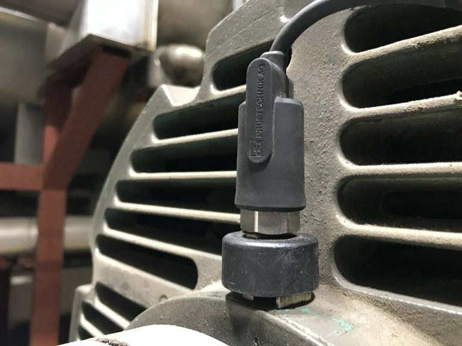
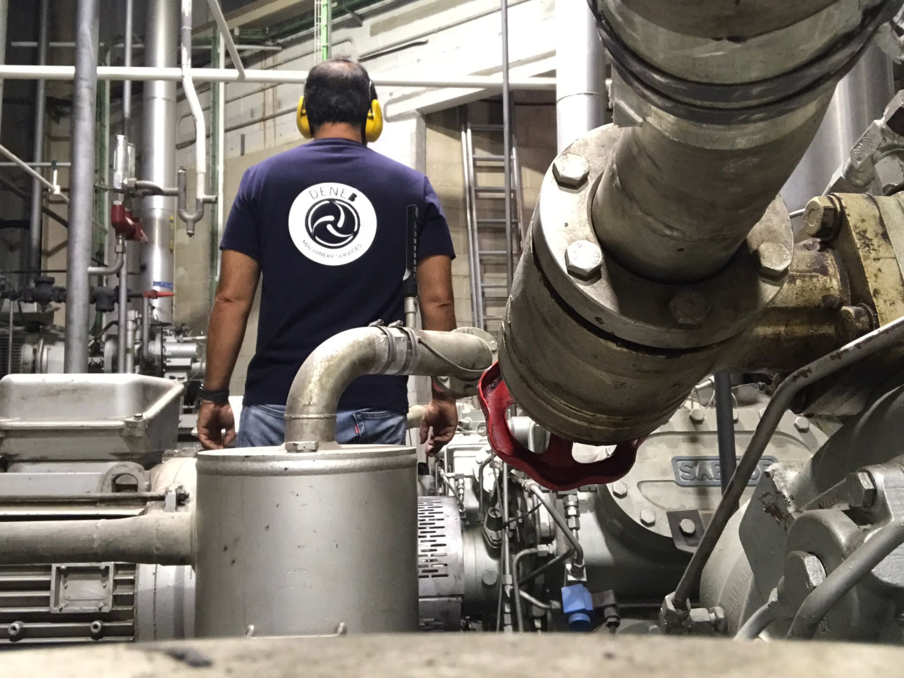
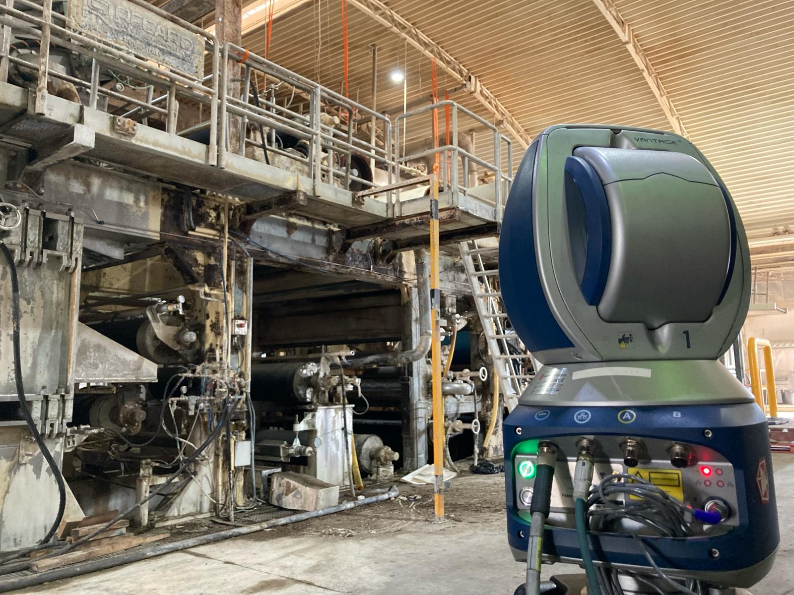

DIAGNÓSTICO INDUSTRIAL
Ingeniería de mantenimiento · Valencia
Precisión que
mantiene todo
en movimiento.
Entendemos tu maquinaria. Detectamos el origen del fallo y definimos la intervención con datos, criterio y experiencia de campo.
DONDE IMPORTA
A pie de máquina.
Medir es el principio.
Entender marca la diferencia.
Una medición solo es útil cuando permite tomar una buena decisión. En Deneb convertimos el estado de tu maquinaria en un diagnóstico claro y una actuación concreta.
NavalPapelGran industria
01 Especialidades
La respuesta precisa.
Para cada equipo.
Diagnóstico, alineación y medición especializada.
En planta o en taller.
Y después del diagnóstico, continuidad.
Mantenimiento y seguimientoPlanes de mantenimiento predictivo
Priorización de activos, selección de tecnologías de monitorización y definición de frecuencias de inspección.
Digitalización de inspecciones
Configuración de inspecciones visuales con aplicaciones móviles y formación de los equipos de mantenimiento.
Lubricación basada en la condición
Programas de lubricación guiados por mediciones de ultrasonido o vibración y adaptados al estado del equipo.
Optimización de seguros de maquinaria
Documentación del mantenimiento predictivo para apoyar la revisión de las tarifas del seguro de maquinaria.
02 Método Deneb
Del dato a la decisión.
Sin perder de vista la máquina.
01
Evaluar.
Entender el contexto, el historial y la condición del equipo. Medir donde hay que medir.
Contexto + medición02
Intervenir.
Definir la corrección a partir de los datos y de la prioridad operativa de cada máquina.
Criterio + actuación03
Verificar.
Comprobar el resultado y dejar una recomendación clara para el siguiente paso.
Comprobación + seguimiento
Tecnología. Y oficio.
La herramienta mide.
La experiencia interpreta.
Desde 2013, trabajamos con equipos de mantenimiento de los sectores naval, papelero y de gran industria. A pie de máquina, donde los datos cobran sentido.
Conoce cómo podemos ayudarte03 Hablemos
Tu equipo.
Nuestro siguiente
punto de partida.
Cuéntanos qué máquina tienes, qué has detectado y qué necesitas resolver.
lorenzosoler@denebms.com Gran Vía 111 · 46008 Valencia, España